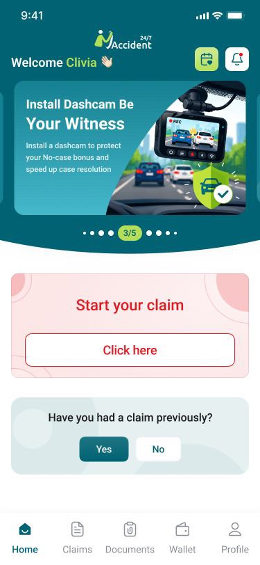
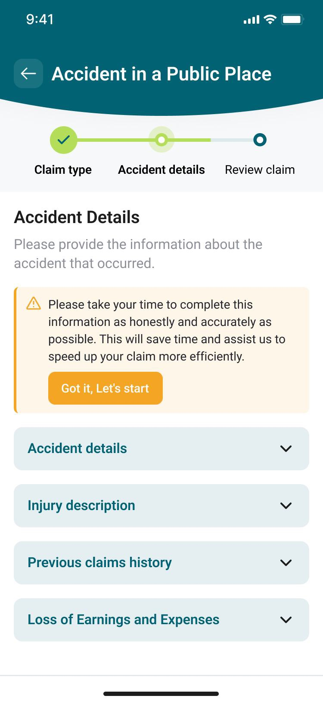
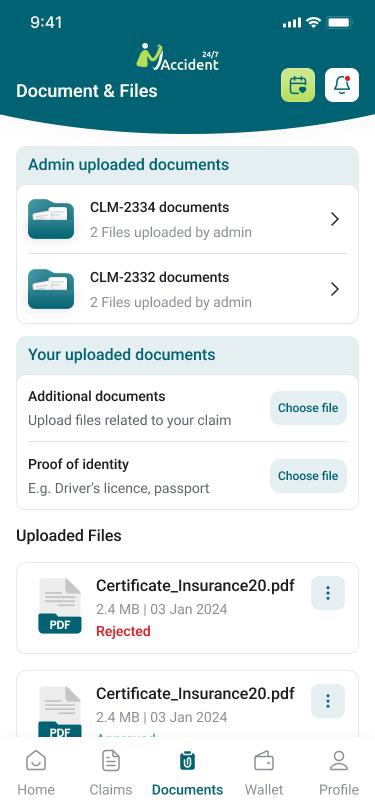

My Accident 24/7: An Accident Reporting and Claims Management Platform for Claimants & Administrators
Replacing Paper-Based Reporting with a Guided Digital Claims Process from Incident to Resolution
A Structured Process for a Stressful Situation
Reporting an accident involves gathering detailed information at a moment of stress, then navigating a claims process that can span weeks of document submission, review and status updates. Without a structured digital system, this process typically relies on phone calls, paper forms, email threads and manual follow-up from administrative teams, all of which introduce delays, errors and a lack of transparency for the claimant.
My Accident 24/7 was built to replace that experience. The platform connects claimants and administrators through two purpose-built interfaces: a mobile app that guides claimants through structured accident reporting for road, workplace and public place incidents, and a web admin portal that manages the full claim lifecycle from initial submission through to document verification, status management and reporting. The platform streamlines compliance, reduces manual coordination and gives claimants real-time visibility into their claim at every stage.
Claimant Mobile App (iOS and Android)
The primary interface for claimants reporting accidents and tracking their claims:
- Registration with one-time onboarding flow capturing personal, identity, vehicle and document information
- Home screen with quick access to Report Accident, My Claims, My Vehicles, and Profile and Documents
- Multi-step accident reporting flow with claim type selection and type-specific guided sections
- Save-as-draft at any step, with the ability to resume incomplete reports from the My Claims screen
- Previous claims history entry, capturing past claim details before first report submission
- My Claims: full claim history with status tracking, admin remarks visibility and document access
- Document management: view, download & print admin uploaded documents in PDF format
- In-app notifications for status updates, document requests and new document availability
- Profile management, password change, terms and conditions access and account deletion




Project Challenges and Needs
Structured Reporting Across Multiple Claim Types
Road traffic accidents, workplace incidents and public place accidents each require different information, different supporting documents and different legal section structures. The platform needed a single reporting flow that branched correctly by claim type, guiding claimants through the right steps in the right order while keeping the experience simple during what is often a distressing situation.
Document Verification Workflow
Claims require verified supporting documents: driving licences, insurance certificates, vehicle licence certificates and proof of address. The platform needed a structured verification queue for administrators, with the ability to approve or reject individual documents, notify claimants of rejections and track verification status across all submissions.
Claim Status Transparency
Claimants submitting accident reports needed real-time visibility into where their claim stood at all times. The platform required a status lifecycle from draft through submission, review, approval and rejection, with automated notifications to claimants at each stage and admin remarks surfaced directly within the claim view.
Legal and Compliance Accuracy
The data fields, document templates and section structures within each claim type needed to align with legal instruction sheets. The platform was designed around static, predefined workflows per claim type, ensuring that the information captured matched what was required for legal processing without introducing scope for claimant error or field omission.
Admin Claim & Document Management
Administrators needed a single view across all incoming claims, with the ability to filter by status, claim type and date range, review full claim files with all submitted information, upload documents to individual claims, control claimant document visibility and generate compliance and activity reports in PDF and CSV format.
Interrupted Reporting and Continuity
Completing a detailed accident report in a single session is not always possible in the immediate aftermath of an incident. The platform needed a save-as-draft capability at every stage of the multi-step submission flow, allowing claimants to return and continue without losing previously entered information, alongside an onboarding flow that captured baseline profile data before any claim was submitted.
Our Solution
We built a two-interface accident reporting and claims management platform, delivering:
- Guided multi-step claim submission across three claim types: road traffic accident, accident at work, and other public place accident
- Type-specific section flows with fields, document requirements and validations aligned to legal instruction templates
- Save-as-draft functionality at any point in the multi-step submission flow, with the ability to resume from where the claimant left off
- Post-registration onboarding flow capturing personal details, identity and vehicle information before the first claim is submitted
- Admin claim management with full claim file views, status updates, document uploads and claimant-controlled document visibility
- Document verification queue with per-document approve and reject workflows, rejection remarks and automated claimant notifications
- Claim status lifecycle from draft through submission, review, approval and rejection, with automated in-app and optional SMS notifications at each stage
- Previous claims history capture, linked to claimant profiles and surfaced within new claim submissions
- Vehicle management module for road traffic claims, linking vehicles, insurance records and uploaded documents to claim files
- Admin reporting with total claims by type, monthly accident trends and user submission statistics, exportable in PDF and CSV
- Mandatory terms acceptance and confirmation message before final submission to prevent post-submission amendments
Admin Web Portal
The central management interface for administrators handling claims from submission to resolution:
- Dashboard with claim volume statistics by type, status breakdowns and a recent submissions list
- Claim file management: full structured claim view with the ability to update status, add remarks and upload documents
- Claimant management: profile view, previous claims history, linked claim files and document uploads
- Vehicle management: vehicle records linked to road traffic accident claims with insurance and VLC document storage
- Document verification queue: review uploaded documents, mark as verified or rejected, notify claimants of required resubmission
- Reporting: total claims by type, monthly trends and submission statistics, exported as PDF or CSV
- Settings: profile management, password management, system configuration and automatic GMT daylight saving adjustment
Key Features and Capabilities
Guided Multi-Step Claim Submission
Claims are submitted through a structured multi-step flow that branches by claim type after the initial selection. Road traffic accidents collect vehicle, third party, insurance and Garda information. Workplace accidents gather employer, incident and health and safety details. Public place accidents capture location and witness information. Each flow follows a static, legally aligned structure that minimises field omissions and guides claimants through every required section.
Document Verification Queue
Administrators review uploaded claimant documents (driving licence, insurance certificate, VLC and proof of address) from a centralised verification queue. Each document can be marked as verified or rejected with a written reason. Rejected documents trigger an automatic notification to the claimant to resubmit or correct the issue, and verification status is tracked per document throughout the claim lifecycle.
Claim Status Lifecycle and Notifications
Claims progress through a defined status workflow: Draft, Submitted, Under Review, Approved & Rejected. Administrators update status from within the claim file and can attach remarks at each transition. Status changes trigger automatic in-app notifications to the claimant, with optional SMS available at admin discretion. Admin remarks are surfaced directly within the claimant's claim view, keeping communication transparent without requiring separate correspondence.
Admin Document Management
Administrators can upload documents directly to a claim file and control whether each document is visible to the claimant. Visible documents appear in the claimant's account in PDF format and are available to download and print. A notification is sent to the claimant when a new document is added to their account, replacing the need for email-based document distribution.
Save as Draft and Onboarding
Claimants can save their progress at any point during accident reporting and resume from where they left off. New users are guided through a one-time onboarding flow after registration, capturing baseline personal, identity, vehicle and document information before their first claim is submitted, reducing the data entry burden at the point of reporting.
Reporting and Audit
Administrators can view claim volume by type, monthly accident trends and user submission statistics from the reporting module. Reports are exportable in PDF and CSV format. All claim status changes are recorded in a status history log against the claim file, and the system maintains automatic password renewal reminders and GMT daylight saving adjustments for compliance.
How It Works
Registration and Onboarding
The claimant registers on the mobile app & completes a one-time onboarding flow capturing personal details, identity documents, vehicle information and baseline supporting documents before accessing the main application.
Accident Reporting
The claimant selects the claim type and is guided through the relevant multi-step sections, entering accident details, injury information, medical and expense data, and uploading supporting photos and documents. The report can be saved as a draft at any stage and completed later.
Submission and Document Verification
After reviewing all entered information and accepting terms, the claimant submits the report. The claim is assigned a reference ID and enters the admin queue. Administrators verify submitted documents, marking each as approved or rejected with reasons communicated back to the claimant via notification.
Admin Review and Status Updates
The administrator opens the full claim file, reviews all submitted information and documentation, updates the claim status and adds remarks where needed. Each status change triggers an automatic notification to the claimant's mobile app, with optional SMS available.
Resolution and Document Access
Once the claim is approved or resolved, the administrator uploads any generated documents to the claim file and controls their visibility to the claimant. The claimant receives a notification and can access, download and print all documents from within the mobile app.
Outcomes and Impact
Reduced Administration Time Per Claim
The platform reduced administrative work from approximately 3 hours to 20 minutes per claim, based on the client’s reported workflow. Digital intake, structured claim files and automated status notifications replaced much of the manual follow-up previously handled through phone calls, paperwork and separate communication.
More Complete Accident Submissions
Guided workflows collect information according to the selected accident type. Required fields, supporting documents and predefined sections help claimants provide the information administrators need before review, reducing incomplete submissions and repeated requests for missing details.
Clearer Claimant Visibility
Claimants can follow their claim from submission through review and resolution without relying on separate phone or email updates. Status changes, administrator remarks and uploaded documents remain available within the same mobile interface.
Technologies Used to Develop the Solution
Flutter
Cross-platform iOS and Android claimant app from a single codebase, delivering a consistent guided claim submission experience across devices.
Node.js
API layer managing claimant accounts, claim records, document uploads, status workflows, verification queues and notification dispatch.
React
Web-based admin portal for claim management, document verification, claimant and vehicle records, and reporting.
PostgreSQL
Claimant profiles, claim records, document metadata, status history, verification logs and vehicle information.
Email / Password
Secure login for both admin & claimant interfaces, with forgot password and reset flows, and a six month admin password renewal reminder.
In-app and SMS
Mandatory in-app push notifications for claim and document events, with optional SMS notifications controllable by administrators.
PDF Generation and Storage
Document upload, storage and PDF delivery to claimants, with admin controlled visibility & download & print support from within the mobile app.
PDF and CSV Export
Admin-facing reports on claim volume, type breakdowns and submission trends, exportable in both PDF and CSV formats.
Here’s What the Client Has to Say

“Before My Accident 24/7, we spent around 3 hours per claim handling follow-up calls, paperwork and status updates. Since Optimize Tech Studio developed the platform, that has fallen to around 20 minutes per claim. Claimants can submit reports digitally, track their claim status and access documents from the app, while our team manages verification and claim files from one place. The process is now much faster and more transparent for everyone involved.”
Prefer to talk it through first?
Book 30-Min Tech Session →